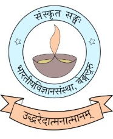

The essentials of Ramayana
Shri Arjun Bharadwaj
Explore talk
संस्कृतसङ्घः
Indian Institute of Scienceसा विद्या या विमुक्तये
A community of learning, conversation,
and discovery through Sanskrit.
वाक्यकारं वररुचिं भाष्यकारं पतञ्जलिम्।
पाणिनिं सूत्रकारं च प्रणतोऽस्मि मुनित्रयम् ॥
Talks, reading circles, and opportunities to learn together.
New dates will be announced here.
Stay connected for the next invited talk or campus activity.
Stay in touchShri Arjun Bharadwaj
Explore talkShri Shashi Kiran BN
Explore talkDravya Lakshana
Explore activityMangala shloka
Explore activity